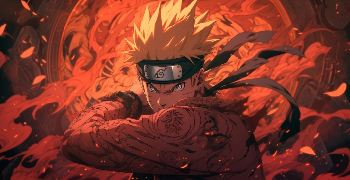

One Piece

ONE PIECE is a legendary high-seas quest unlike any other. Luffy is a young adventurer who has longed for a life of freedom ever since he can remember.
He sets off from his small village on a perilous journey to find the legendary fabled treasure, ONE PIECE, to become King of the Pirates!
Naruto
Naruto is a Japanese manga series written and illustrated by Masashi Kishimoto.
It tells the story of Naruto Uzumaki, a young ninja who seeks recognition from his peers and dreams of becoming the Hokage, the leader of his village.
Dragon balls

The narrative of Dragon Ball predominantly follows the adventures of the Saiyan Son Goku; upon meeting Bulma at the beginning of the series,
the two embark on an adventure to gather the seven Dragon Balls, a set of orbs that summon the wish-granting dragon Shenlong.